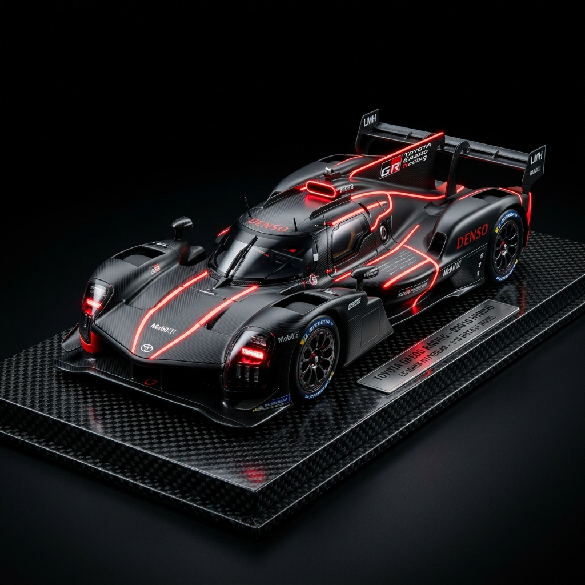
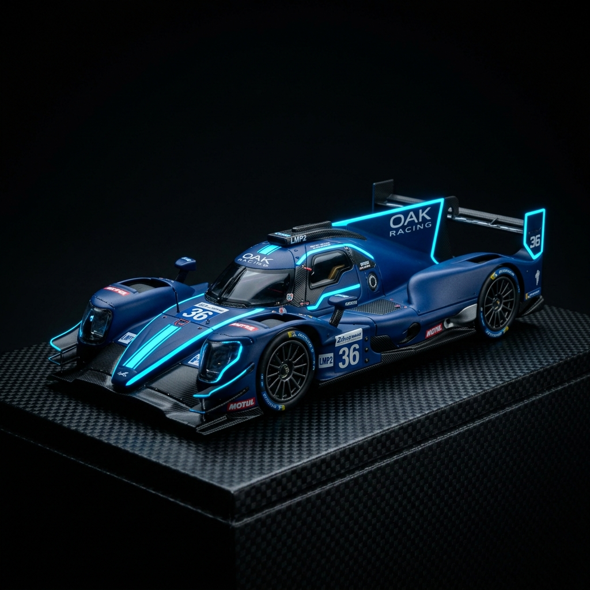
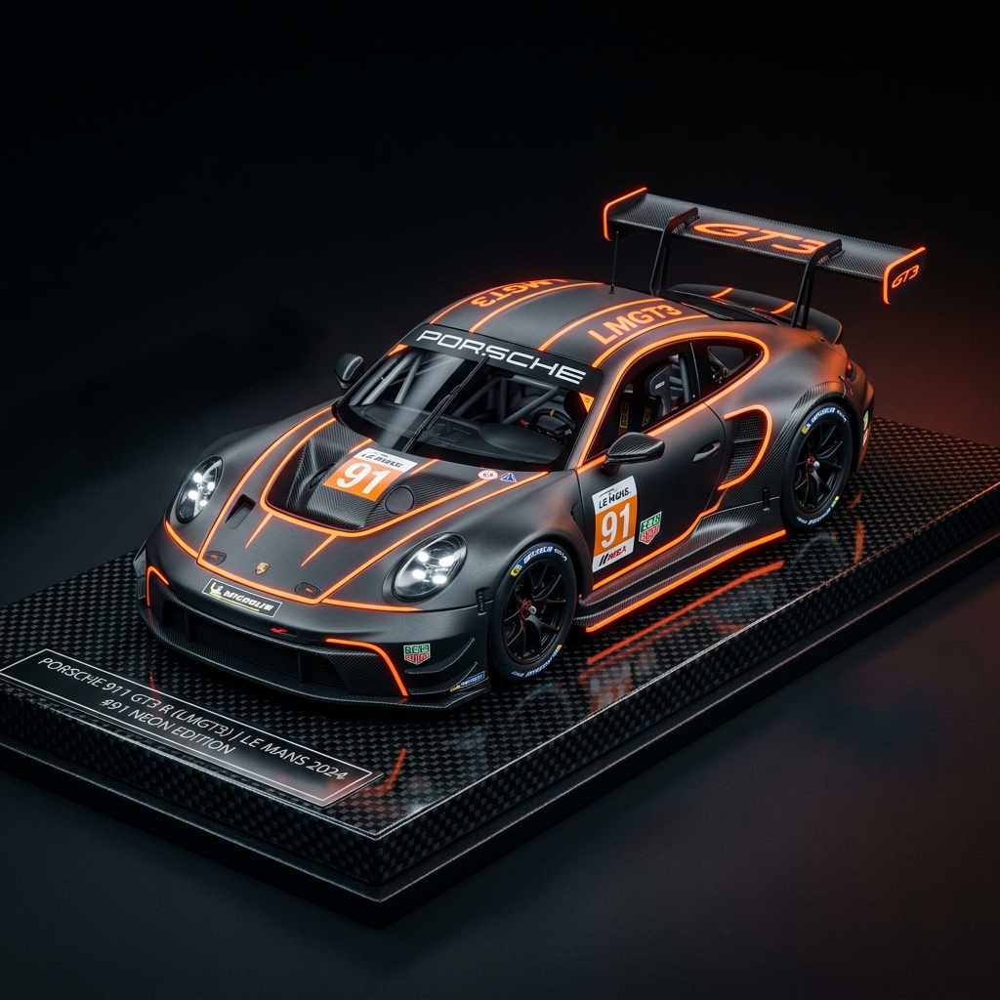

단 3분 만에
이해하는 르망24
가장 혹독한 24시간의 질주, 모터스포츠의 꽃 르망 24시 레이스의 핵심 가이드를 읽고 가슴 뛰는 레이스를 맞이하세요.
Introduction르망24란 무엇인가?
기초적인 역사와 대회 목적에 대해 아코디언 메뉴를 눌러 확인하세요.
Beginners Guide초보자 관전 가이드
르망 24시 레이스를 한눈에 파악하기 위한 5대 체크포인트입니다.
우승 조건
체커기가 흔들리기 전까지 24시간 동안 가장 긴 거리를 달린 레이싱카가 영광의 트로피를 차지합니다.
클래스 이해
세 가지의 성능이 완전히 다른 차량 종류(Hypercar, LMP2, LMGT3)들이 동일한 서킷에서 섞여 달립니다.
피트 전략
레이스카는 연료 충전, 타이어 교체, 드라이버 교대를 위해 정기적으로 피트인을 해야 합니다. 타이밍이 순위를 바꿉니다.
밤 경기 포인트
가로등이 거의 없는 시속 300km/h 초고속 코스에서 헤드라이트 불빛만 의존해 달리는 심야 주행은 사고 위험이 매우 높습니다.
주목 팀 (현대/제네시스)
오랫동안 지배자로 군림하던 포르쉐, 토요타, 페라리 삼파전에 최근 현대자동차가 프리미엄 브랜드 제네시스로 참전을 예고했습니다.
Circuit Guide사르트 서킷
르망 24시의 무대, Circuit de la Sarthe의 구간별 특성과 공략법을 살펴보세요.
Circuit de la Sarthe(사르트 서킷)는 르망 시내 주변의 일반 공용도로와 상설 서킷 구간을 연결한 혼합형 서킷입니다. 뮬산 스트레이트의 직선 전속력 질주부터 뮬산 코너의 극한 감속 구간까지, 세계에서 가장 다양하고 혹독한 서킷 환경을 제공합니다.
위 지도에서 구간을 선택하면
상세 정보가 여기에 표시됩니다.
Classes클래스 비교 가이드
르망 24시에 동시에 출전하는 세 클래스의 차량 사양을 탭으로 비교해 보세요.

최첨단 에어로다이내믹스 기술과 하이브리드 엔진이 결합된 내구레이스 최상위 프로토타입 클래스입니다. 전용 레이스 규정에 따라 커스텀 디자인되며 제조사 기술의 정수를 보여줍니다.

정해진 스펙의 섀시(오레카 섀시 고정)와 깁슨 V8 엔진만을 사용할 수 있는 단일화 규정 클래스입니다. 제조사 싸움보다는 드라이버의 실력과 피트 스톱 효율이 큰 차이를 냅니다.

우리가 일반 도로에서 간혹 마주치는 슈퍼카(포르쉐 911, 페라리 296, 맥라렌 등)의 골격 레이싱 전용 규격 개량 차량들입니다. 입문자들에게 가장 친근한 디자인을 가졌습니다.
핵심 사양 한눈에 비교하기
| 비교 항목 | HYPERCAR | LMP2 | LMGT3 |
|---|---|---|---|
| 성격 | 제조사 주도의 최상위 프로토타입 | 지정 섀시 기반 독립팀 프로토타입 (르망 24시 전용 편성) |
양산형 슈퍼카 기반 GT3 레이서 (2024 신설) |
| 최고 속도 | 약 345 km/h | 약 320 km/h | 약 300 km/h |
| 출력 / 무게 | 680마력 / 1030kg (기본 사양) |
540마력 / 950kg | 550마력 / 1300kg (BoP 전) |
| 하이브리드 구동 | 규정별 전륜 또는 후륜 탑재 | 없음 | 없음 |
Recent Winners최근 우승 결과
24시간 혹독한 시련을 뚫고 르망 최정상에 오른 역대 클래스별 우승 결과입니다.
Contesters출전 팀 상세 분석
제네시스 레이싱팀을 포함한 르망의 주역들을 실시간 검색으로 분석해 보세요.
FIA WEC Videos공식 영상
FIA World Endurance Championship 공식 유튜브 채널의 최신 영상을 확인하세요.